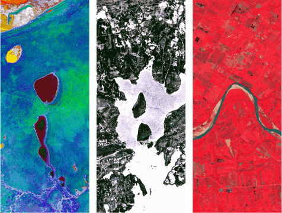
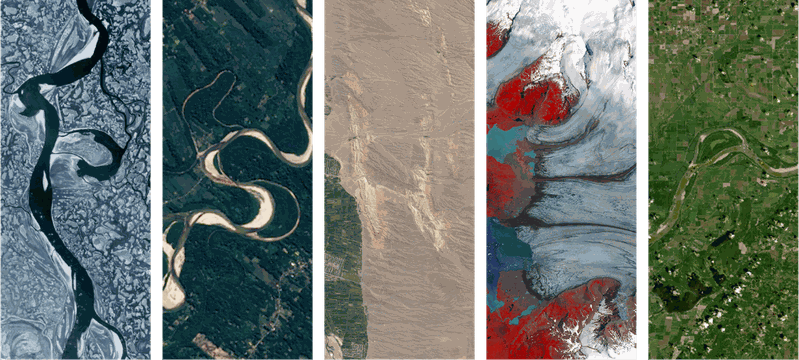
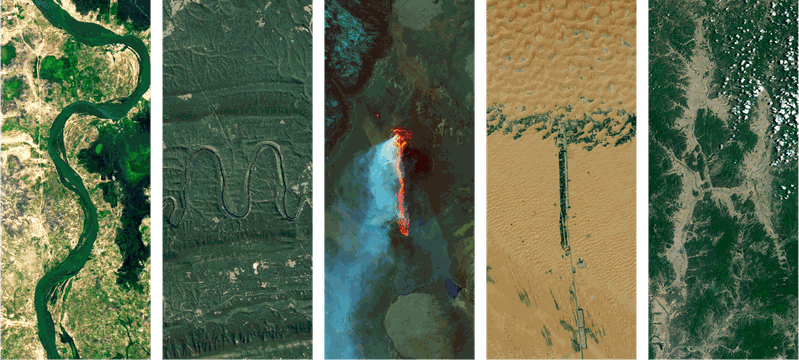
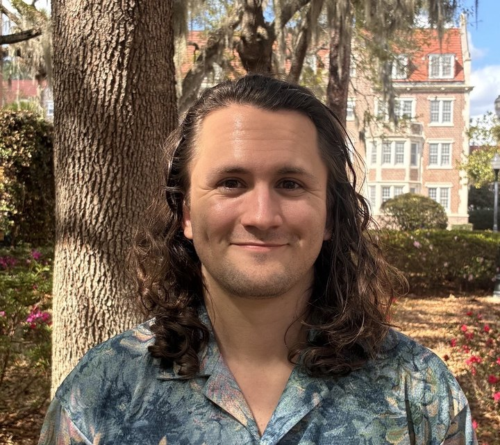

Medical geographer & vector ecologist, mapping how environmental conditions alter the geography of disease.
I study how environmental change reshapes the geography of vector-borne and zoonotic disease. As a postdoctoral researcher in the Smiley Evans Lab at UC Berkeley, I model where vectors, pathogens, and spillover risk are likely to occur, and how climate, global environmental change, and social vulnerability move those boundaries.
My work joins geography, community ecology, and public health, translating ecological theory into maps and public health outputs meant to inform decisions. Before Berkeley I completed a PhD in Medical Geography & Global Health at the University of Florida, with foci on Haiti and the Republic of Georgia.

Where do mosquitoes and ticks live now, and where will they live as the climate shifts? Aedes across Haiti; Ixodes and Dermacentor in the Republic of Georgia.
Connecting ecology to spillover risk, reading the landscape for where future emergence is likely.
Building multi-vector, multi-pathogen spatial risk frameworks across regions, bringing zoonotic and vector-borne threats into one comparable surface.
How structural forces compound into risk: climate, colonisation, conflict & corruption as a vulnerabilising assemblage, plus corneal disease and social vulnerability.
Interactive month-by-month modeling of vector mosquito distributions across the Ouest Department. Published in Am. J. Trop. Med. Hyg.
SDM · ClimatePopulation exposure risk for Aedes aegypti under four warming regimes, with prediction dashboards.
Ecology · GeorgiaTen years of surveillance mapped into distribution models and an interactive vector-borne disease risk assessment.
Health geography · HaitiClimate change, colonisation, conflict & corruption as an assemblage driving infectious-disease risk. Published in Geoforum.
Epidemiology · USACorneal donation attitudes and the geography of keratitis, through literature review and geospatial modeling.
I'm always open to collaboration!